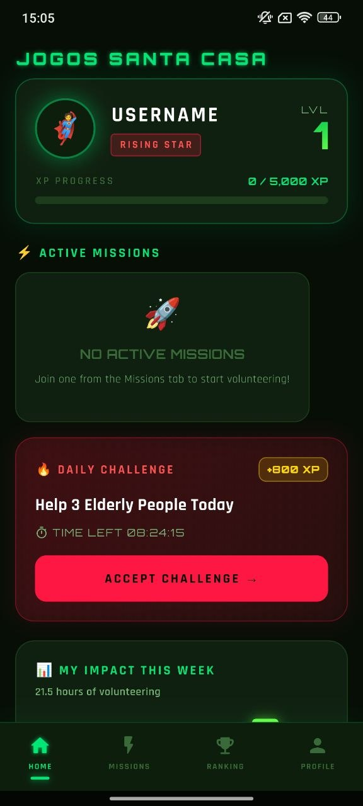
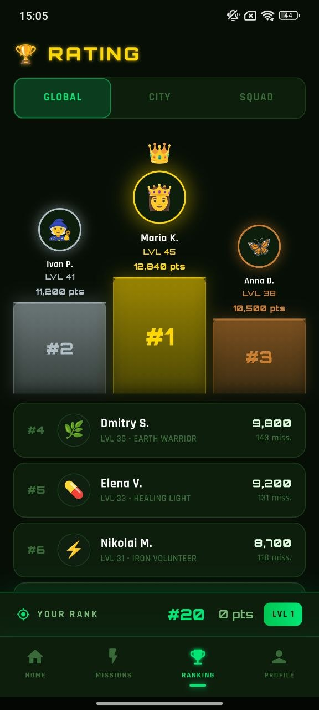
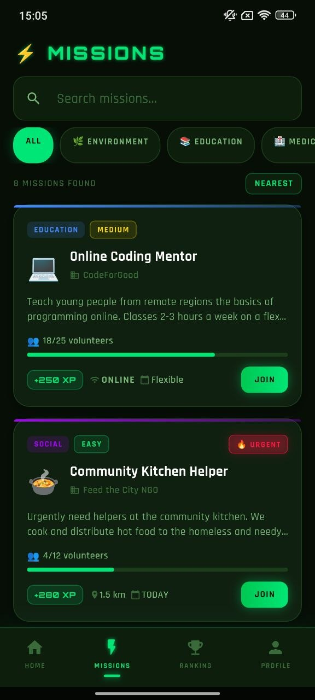
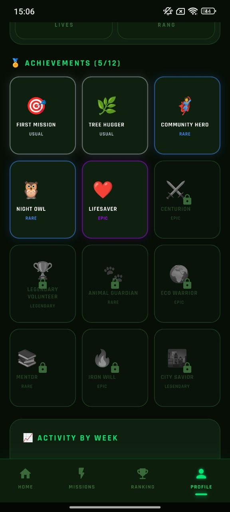
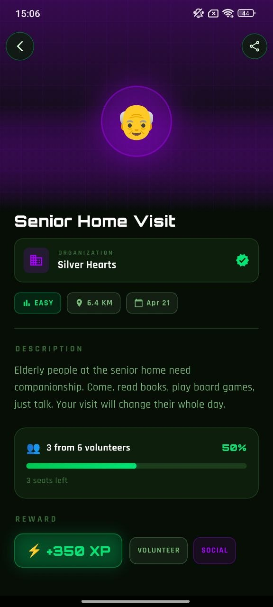
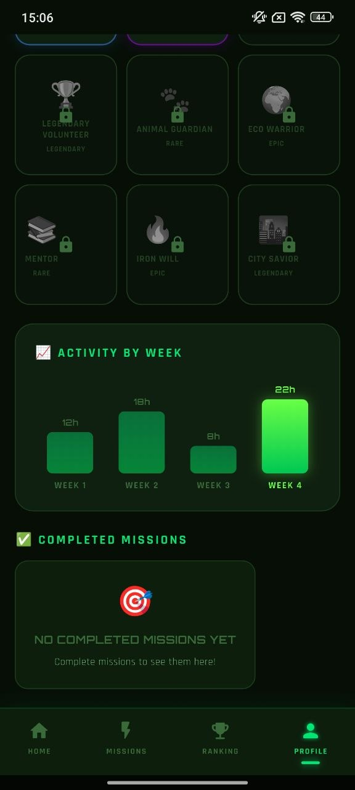

01
Mission discovery
Browse meaningful opportunities by category, urgency, format, distance, and availability with bold mission cards that are easy to understand at a glance.
Jogos Santa Casa combines meaningful volunteer missions, achievement-driven motivation, rankings, profile growth, and a futuristic neon experience that makes impact feel alive, visible, and rewarding every single day.



The app turns volunteer activity into a high-energy, rewarding, and polished experience with strong visual hierarchy and real progress feedback.
Browse meaningful opportunities by category, urgency, format, distance, and availability with bold mission cards that are easy to understand at a glance.
Every contribution pushes your level forward through XP, milestones, and visible progress indicators that keep motivation high.
Global, city, and squad-style positioning gives users a reason to stay active while still celebrating meaningful real-world help.
Unlockable badges, special rarity states, and collectible-style visuals bring personality and long-term engagement to the app.
Weekly activity charts and mission completion areas make it easy to understand how much good you are actually doing over time.
Deep dark surfaces, neon accents, glowing outlines, and arcade typography make the product feel unique, modern, and high-end.
Jogos Santa Casa does not feel like a boring directory of good deeds. It feels alive. Missions become goals, progress becomes visible, and contribution becomes something users want to return to.



A tighter screen showcase focused on the most visually powerful and product-defining parts of the application.
The product loop is simple and powerful. Users find a mission, earn progress, build a visible profile, unlock achievements, and stay connected to the feeling that their time matters.
The product feels more valuable because the design, structure, and motivation system all support the same goal: meaningful action.
“The visual style is insane. It feels like a premium game, but the purpose is actually real and useful.”
Marco“Missions are easy to browse, the rewards make sense, and the ranking part keeps it fun without feeling cheap.”
Sofia“The app has personality. The profile and achievement screens are especially strong.”
DanielExplore missions, build your profile, collect achievements, and make your contribution visible in a premium app experience.